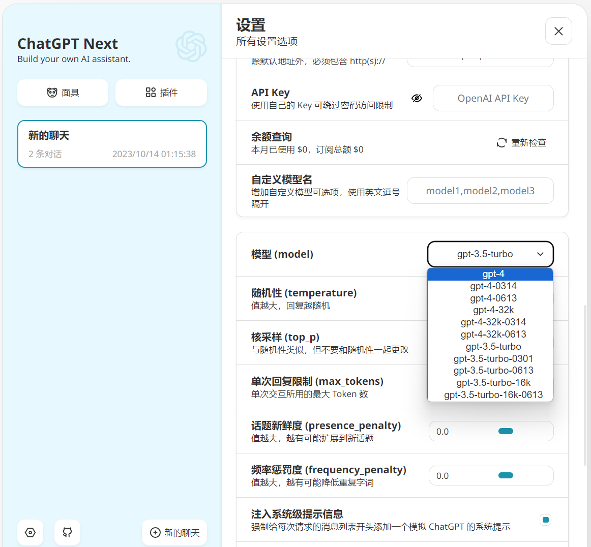

一、搭建准备
你的GitHub账号
准备好OpeAI API Key
科学上网工具，否则很难访问Vercel
Vercel Deploy
自己的域名(可选)
二、搭建流程
初始化部署
科学上网，并确保网页版GitHub已经登录，点击上方Vercel链接并选择GitHub账号登录:
点击Create创建仓库
并在Configure Project中配置好环境变量，然后点击Deploy即可，等待生成即可访问
OPENAI_API_KEY:粘贴你的API Key CODE:此处填写为访问密码，可填写多个，用“,”隔开 password1,password2(若不需要设置密码可跳过或未来在环境变量中删除此项，但无密码存在被爆破的风险)
保持更新
如果你按照上述步骤一键部署了自己的项目，可能会发现总是提示“存在更新”的问题，这是由于 Vercel 会默认为你创建一个新项目而不是 fork 本项目，这会导致无法正确地检测更新。 推荐你按照下列步骤重新部署：
删除掉原先的仓库；
使用页面右上角的 fork 按钮，fork 本项目；
在项目Actions 页面启用 Workflows，并启用 Upstream Sync Action，启用之后即可开启每小时定时自动更新；

- 在 Vercel 重新选择并部署；
Vercel 重新选择并部署
当我们从 Github fork 本项目之后，需要重新在 Vercel 创建一个全新的 Vercel 项目来重新部署，首先点击黑色按钮 Add New… -> Project
在 Import Git Repository 处，搜索 chatgpt-next-web；
选中新 fork 的项目，点击 Import；
在项目配置页，点开 Environmane Variables 开始配置环境变量；
依次新增名为 OPENAI_API_KEY 和 CODE 的环境变量；
填入环境变量对应的值(需手动输入环境变量的Name)；
记得点击 Add 确认增加第二个环境变量(以后每次修改环境变量后都需要在本项目Deployments中的第一栏选择Redeploy)；
请确保你添加了 OPENAI_API_KEY，否则无法使用；
点击 Deploy，创建完成，耐心等待部署完成，成功后可点击Visit尝试访问；
链接自定义域名(可选)
在Vercel首页点击我们新建的项目，也就是第一个，点击最右侧的Settings
->Domains,在上方输入自己的域名并点击Add，默认使用Recommended，创建后点击Edit在Redirect to 将你的域名重定向到.app的初始域名，点击Save；
此时仍会提示无效配置，接下来需要到域名提供商的控制台进行解析，这里以阿里云为例:
注意上方 Type A, Name @ , Value 76.76.21.21
进入登录阿里云，进入域名管理控制台，找到域名并点进解析设置中，点击添加记录
记录类型选择 A
主机记录中选择 @
记录值粘贴 Value地址
TTL默认即可
点击确认后返回Vercel中刷新域名设置即可
设置成功
三、结语
Vercel为我们提供了一个低门栏的便捷跨平台AI工具，相比直接访问OpenAI官网有更快的速度，平台内置众多预设模型堪比AIPRM插件，同时支持导入模型且只需使用对应API即可体验GPT4.0。

最后，祝你成功，实现GPT自由！
如果您喜欢此博客或发现它对您有用，则欢迎对此发表评论。 也欢迎您共享此博客，以便更多人可以参与。 如果博客中使用的图像侵犯了您的版权，请与作者联系以将其删除。 谢谢 ！